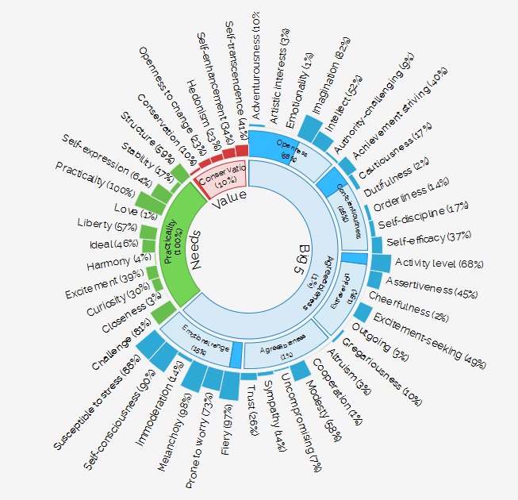

Personality
You are skeptical, tranquil and heartfelt.
You are dispassionate: you do not frequently think about or openly express your emotions. You are solemn: you are generally serious and do not joke much. And you are melancholy: you think quite often about the things you are unhappy about.
More than most people, your choices are driven by a desire for efficiency.
You are relatively unconcerned with both tradition and taking pleasure in life. You care more about making your own path than following what others have done. And you prefer activities with a purpose greater than just personal enjoyment.
Data Behind Your Personality
